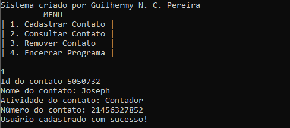
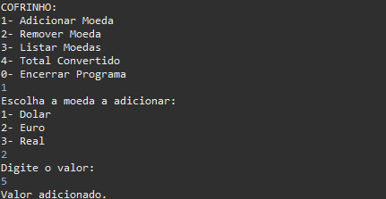
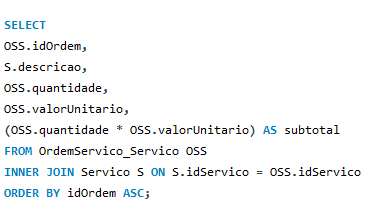

Portfólio

Esse portfólio se trata de um conjunto de 4 (quatro) questões que vão progressivamente se tornando mais difíceis. A imagem mostra parte da última questão. Esta se trata de um sistema de cadastro de funcionários com base no seu setor, número de contato e nome.


Consiste em um porquinho onde se pode adicionar moedas de 3 (três) países diferentes, mostrando o valor total convertido para Real com base na cotação atual de quando desenvolvido. Além da conversão, é possível adicionar, remover e listar as moedas.

Com base em um sistema fictício de uma empresa fictícia que realiza serviços variados aos seus clientes, esse banco de dados foi criado para a melhor organização de todos os serviços. Nele, alguns comandos simples e outros um pouco mais avançados são praticados com foco na busca de valores.